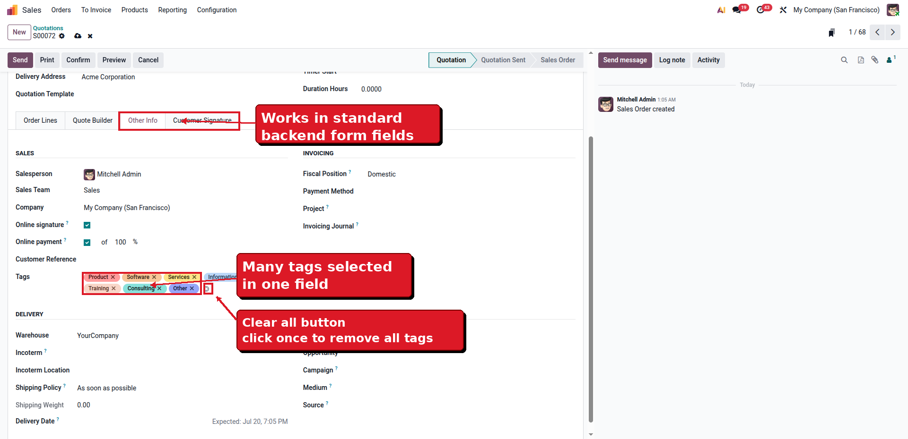

This module improves every editable many2many_tags widget in the backend. Instead of deleting tags one by one, users can click a single clear icon to empty the field. It works globally with standard Odoo fields and custom many2many tag fields.
Remove all selected tags from a field instantly.
Works with many2many_tags fields across backend forms.
The clear icon appears only when the field can be edited and contains tags.
Install the module and use it immediately.
Open any backend form with a many2many_tags field.
Select multiple tag records in the field.
Use the clear icon beside the tag list.
All tags are removed from the field.
The clear icon appears beside an editable many2many tag field when tags are selected. Click it once to remove every tag from the field.

Use it with contact tags, product tags, taxes, routes, followers, access groups, allowed companies and custom many2many tag fields. The module does not add menus or settings because the button is added directly to the existing tag widget.